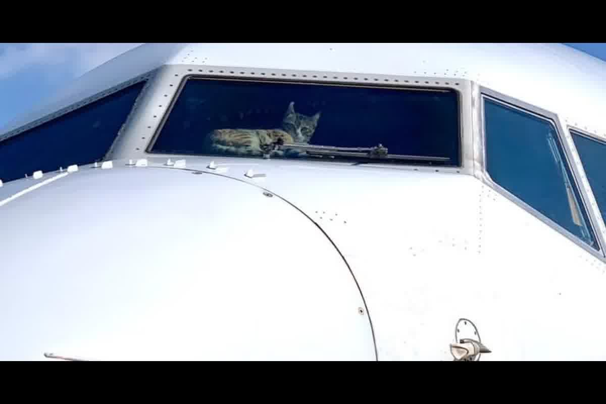
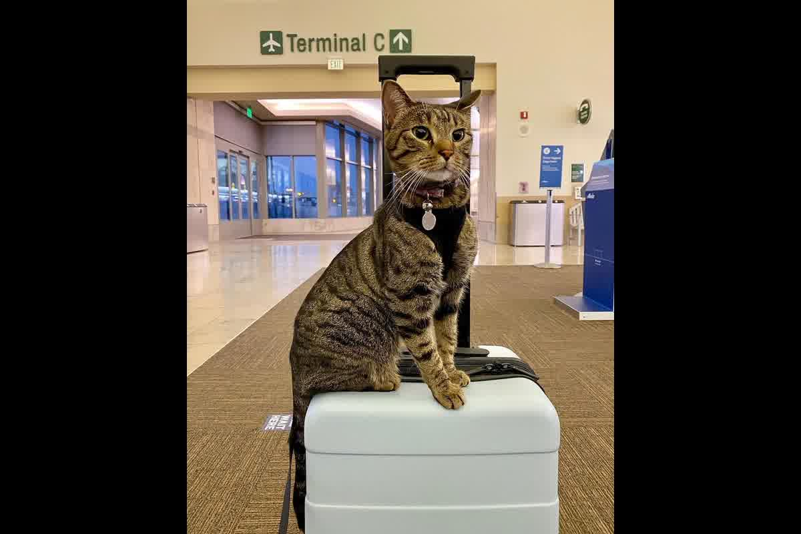

Análisis técnico de la Dra. Jessica Camacho sobre el transporte de felinos. Riesgos de lipidosis, hipobaria y criterios para elegir entre cabina o bodega.

La fragilidad metabólica del felino frente al estrés neuroendocrino determina que la elección del compartimento de carga no sea una preferencia estética, sino una decisión de supervivencia biológica. Al evaluar gatos en cabina vs. bodega: cuándo aplica cada opción, el riesgo de gatillar una lipidosis hepática por anorexia reactiva supera cualquier consideración logística. En Trujillo, recibimos pacientes que llegan al aeropuerto sin el condicionamiento etológico necesario para soportar las variaciones de presión atmosférica en solitario.
Un gato que deja de comer debido al pánico del transporte aéreo inicia una movilización masiva de ácidos grasos hacia el hígado en menos de 24 horas. A diferencia de los perros, el metabolismo felino es ineficiente procesando estas grasas, lo que deriva en una disfunción hepática grave que puede ser letal tras el aterrizaje. Viajar en cabina permite al propietario monitorear la vigilancia del animal y administrar hidratación o estímulos que mitiguen la respuesta del eje HPA (hipotálamo-pituitario-adrenal).
Cuando el animal viaja en bodega, el aislamiento térmico y acústico impide detectar si el felino ha entrado en un estado de congelamiento conductual o si presenta signos de distrés respiratorio por hipobaria. El monitoreo visual directo en cabina reduce la probabilidad de que un cuadro de estrés agudo pase desapercibido por el personal de vuelo.

La presurización de un avión comercial a 8,000 pies de altitud equivalente reduce la disponibilidad de oxígeno, lo que impacta directamente en la frecuencia cardíaca del felino. En gatos con patologías cardíacas subclínicas, como la miocardiopatía hipertrófica, este cambio de presión puede desencadenar un edema pulmonar o un tromboembolismo. Al comparar gatos en cabina vs. bodega: cuándo aplica cada opción, se debe considerar que la cabina de pasajeros suele tener un control de temperatura más estable y una respuesta más rápida ante emergencias ambientales.
La bodega, aunque presurizada, está sujeta a ruidos de turbinas y movimientos de carga que elevan los niveles de cortisol de forma sostenida durante todo el trayecto. Un gato con niveles altos de cortisol presenta una supresión del sistema inmune que lo vuelve vulnerable a brotes de herpesvirus o calicivirus post-viaje. El manejo de estos riesgos requiere un examen clínico previo que certifique la estabilidad hemodinámica del paciente antes de someterlo a la hipoxia leve del vuelo internacional.
La opción de cabina está limitada por el peso total del gato más el transportador, que generalmente no debe exceder los 8 kilogramos para la mayoría de las compañías que operan en Perú. El contenedor debe ser flexible y cumplir con las medidas exactas para deslizarse bajo el asiento delantero, garantizando que el animal pueda darse la vuelta y permanecer en posición natural. Si el gato es de una raza de gran tamaño, como un Maine Coon, la bodega se convierte en la única alternativa legal, exigiendo un transportador rígido con especificaciones IATA CR-1.
La normativa de países como el Reino Unido o Australia prohíbe el ingreso de animales en cabina, obligando a que todos los gatos lleguen como carga oficial en bodega por razones de bioseguridad. En estos escenarios, el propietario debe centrarse en la preparación del microambiente de la caja de transporte, utilizando feromonas sintéticas y materiales absorbentes de alta calidad. La seguridad documental es el otro pilar que sostiene este proceso, donde el microchip debe ser implantado antes de cualquier vacuna antirrábica para que el ingreso sea autorizado sin detenciones.
La aclimatación al transportador debe comenzar al menos tres meses antes de la fecha programada para el vuelo. Un gato que identifica su caja como un refugio seguro mantendrá ritmos circadianos más estables y una menor reactividad ante los estímulos auditivos del aeropuerto. No se trata de obligar al animal a entrar, sino de convertir el contenedor en su zona de alimentación y descanso habitual para reducir el fenómeno de desincronización que ocurre durante el tránsito.
El uso de sedantes está contraindicado en gatos que viajan en avión debido al riesgo de hipotensión severa y a la supresión de los reflejos de corrección postural. Un animal sedado no puede responder adecuadamente a las turbulencias ni a los cambios de presión, lo que incrementa el riesgo de lesiones físicas o muerte súbita. La alternativa segura es el uso de nutracéuticos que modulen la respuesta al estrés sin comprometer el estado de alerta ni la función respiratoria del paciente.
La preparación nutricional previa al viaje debe asegurar que el gato esté bien hidratado y que no haya cursado episodios de vómitos o diarreas en la semana anterior. La lipidosis hepática es mucho más frecuente en animales que ya presentan un balance energético negativo antes de subir al avión. En Trujillo, realizamos perfiles bioquímicos completos para descartar enfermedades renales o hepáticas que podrían complicarse fatalmente bajo las condiciones de hipobaria y ayuno prolongado asociadas a los viajes internacionales.
La decisión errónea entre bodega o cabina puede desencadenar un fallo hepático irreversible en su gato debido al estrés metabólico no gestionado. Zoovet Travel audita la salud de su mascota en Trujillo para determinar si es apta para el vuelo y bajo qué condiciones de transporte. Proteja la vida de su felino con protocolos médicos diseñados para la exportación internacional.